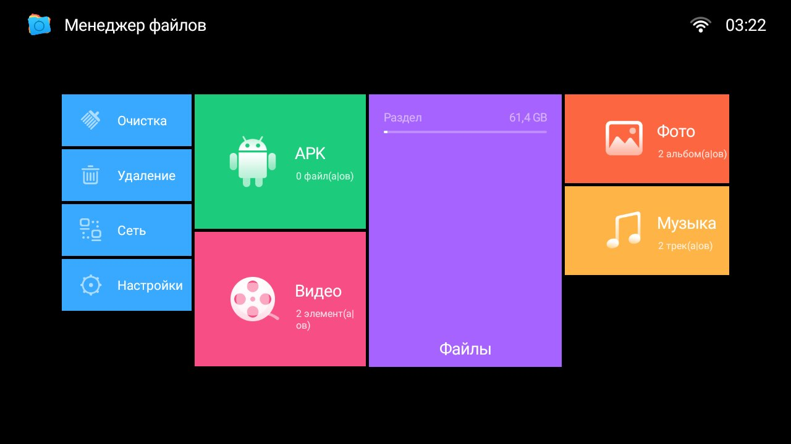

MeleFileManager — отличный файл менеджер для Андроид ТВ приставки и телевизоры. Очень простой, но удобный файловый менеджер для работы с локальными файлами и общим доступом по сети. Удобное управление с пульта ДУ. Есть возможность операций с файлами кнопкой «Меню» и сортировка по типу содержимого в папке.
